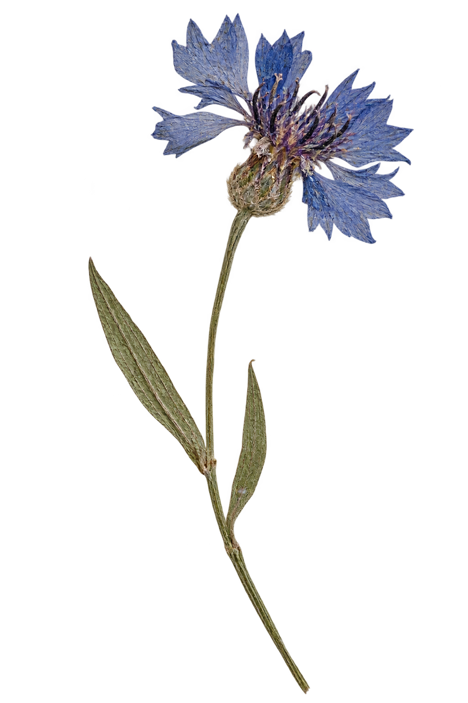
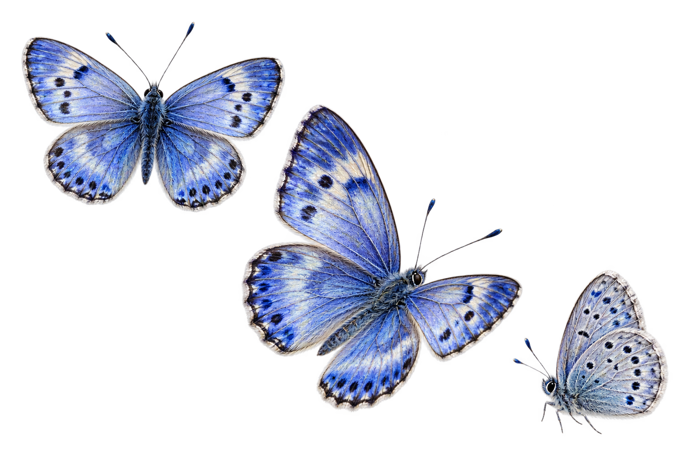
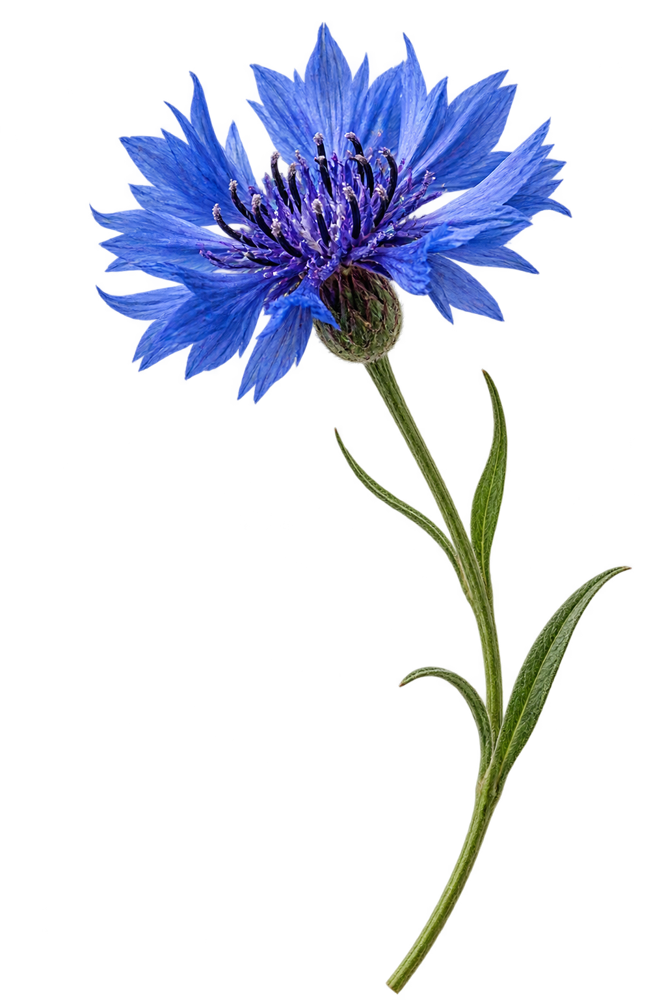

Выбор дизайна
Шесть способов
показать источники
Одинаковый смысл, но разная подача. Нажмите «Выбрать», чтобы отметить фаворита.
01
Ботанический архив
Документы как гербарные листы: спокойно, академично и в стиле остальных разделов.


Учебный процессПоложение об аттестации
Официальный документПравила приёма
Подтверждение особых прав и БВИ
П
ПоступариумНашёл 3 подходящих источника
→Ответам можно доверять осознанноНе просто ответ.
Не просто ответ.
Ответ с основанием.
Ищет в документах вуза, объясняет простыми словами и оставляет ссылку для проверки.
- 01Ищет в документах
- 02Объясняет без канцелярита
- 03Показывает источник
- 04Не придумывает ответ
02
Путь ответа
Одна наглядная цепочка от живого вопроса до проверяемого документа.

Как работает ПоступариумОт вопроса —
От вопроса —
к подтверждённому ответу
03
Живая стопка документов
Компактный редакционный блок: документы реагируют на пункты справа.
Стипендии и материальная помощь
Положение об учебном процессе
Официальный документПравила приёма
Открыть источник ↗
Всё можно проверитьОтвет строится
01 02 03
Ответ строится
на документах
Конкретный вуз
Не общие советы, а правила вашей организации.
Актуальная версия
В ответе указано, из какого документа взята информация.
Честная граница
Если данных нет, бот не будет додумывать.
04
Цитата под увеличением
Главное — не сами документы, а точный фрагмент, на котором основан ответ.
Найдено в правилах приёма
«Для подтверждения права на БВИ поступающий должен набрать установленное количество баллов ЕГЭ…»Открыть документ полностью ↗
ППоступариум объясняет
Нужный порог зависит от олимпиады и выбранной программы.
Мы покажем точное значение и ссылку на правило.
▤ Правила приёма · 2026
05
Картотека источников
Самый интерфейсный вариант: архив выглядит как понятный рабочий инструмент.
Официальный документ · обновлён 12.08.2026
Правила приёма
Найденный фрагмент
Перейти к документу ↗Условия подтверждения особых прав определяются результатами ЕГЭ по профильному предмету.
ПКороткоБот нашёл правило и перевёл его на понятный язык.
06
Бабочка-проводник
Вопрос отправляется в базу знаний, а бабочка возвращается с ответом и источником.
Ваш вопросКакие баллы нужны
для подтверждения БВИ?Отправлено ✓
для подтверждения БВИ?Отправлено ✓
База знаний38 документов
Ищу нужное правило…
Ответ найденДля подтверждения БВИ нужен установленный вузом балл ЕГЭ.
Правила приёма · источник ↗